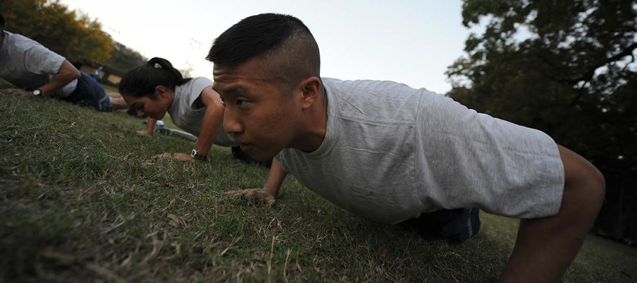
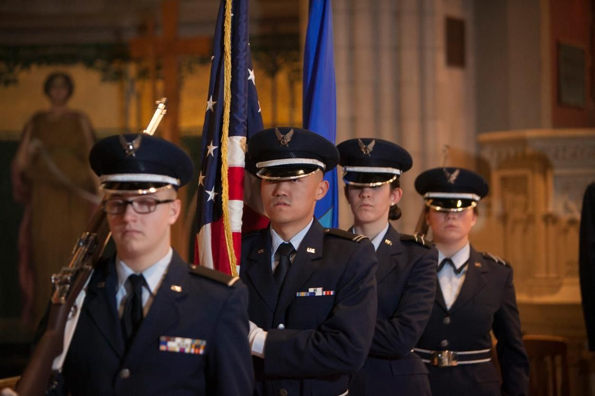
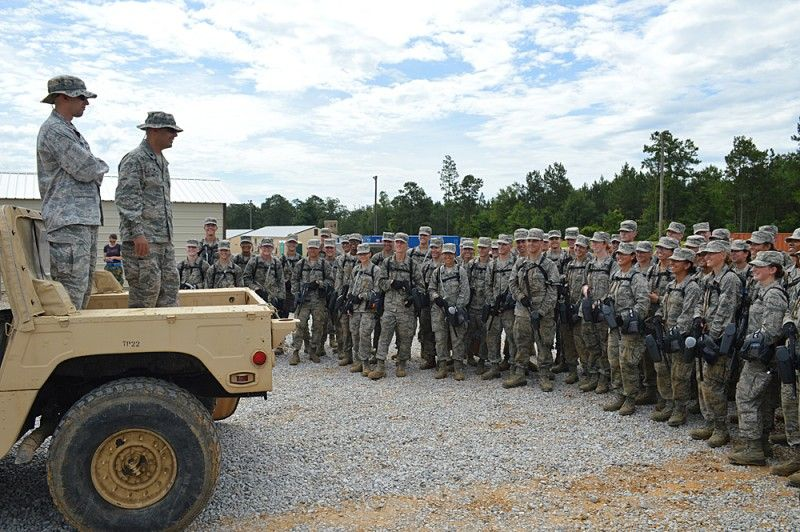
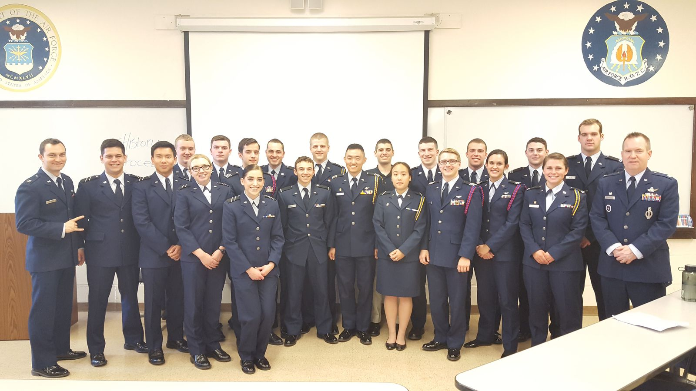
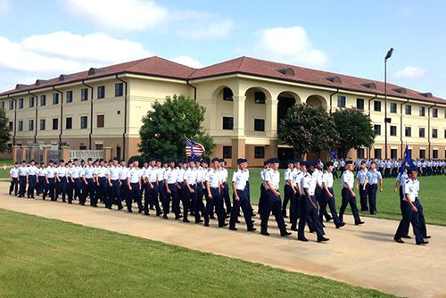
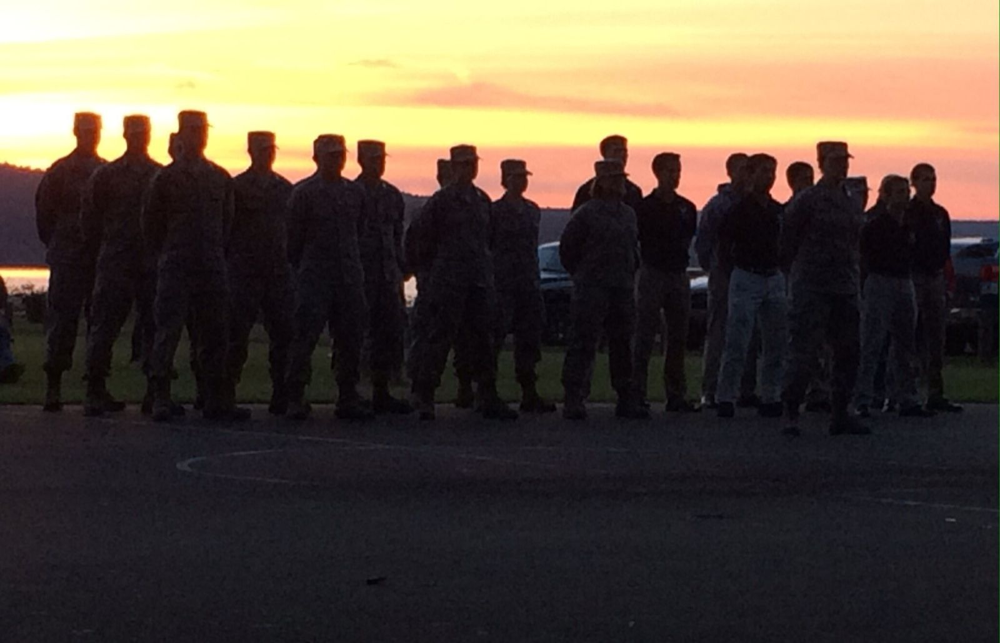

Physical training
Group PT builds the fitness standard every officer is held to — and the esprit de corps that comes from earning the morning together.
SECTION 03 // CADET LIFE
Det 520 cadets are full-time students first — engineers, athletes, musicians, fraternity and sorority members — who train together as a unit every week.
01 // THE WEEKLY RHYTHM
Group PT builds the fitness standard every officer is held to — and the esprit de corps that comes from earning the morning together.
Academic classes in Barton Hall — one credit hour in the GMC years, three in the POC years — covering airpower, leadership, and national security.
Two hours of hands-on training: customs and courtesies, drill and ceremonies, and cadet-led exercises where the POC plans and the GMC executes.

02 // LEADERSHIP LABORATORY
Leadership Laboratory is the cadet-run core of the week, taken every year alongside Aerospace Studies. Juniors and seniors plan, organize, and lead it; freshmen and sophomores learn by doing — customs and courtesies, drill and ceremonies, physical fitness, and teamwork.
It is where classroom leadership becomes practice. The POC exercises the managerial and organizational skills they are studying, the GMC gets its immersion into the Air Force way of life, and the cadre coaches from the edges. Everything that happens at Field Training starts here.
03 // ORGANIZATIONS
Joint Service Color Guard. Cadets and midshipmen from all three ROTC programs present the nation's colors at Cornell sporting events and ceremonies across the Finger Lakes region — all volunteer, all precision.
Scabbard and Blade. Cornell's Charlie Company, First Regiment — founded in 1906, the third company in the nation — honors members of all three commissioning programs who best exemplify academic strength, service, and character.


04 // FIELD TRAINING
Between sophomore and junior year, cadets travel to Maxwell Air Force Base, Alabama for two weeks of evaluated Field Training — the summer capstone of the GMC years. Leadership, followership, and teamwork are tested across two settings, in garrison and in the field.
It is demanding and it is formative. Cadets return having led their peers under pressure, and step into the Professional Officer Course as the ones now running the wing. See how Field Training fits the program →
05 // THE UNIT

The cadet wing after the last Leadership Laboratory of the year.

Det 520 cadets on the march at Maxwell AFB, Alabama.

Evening formation during joint training with Army and Navy ROTC.
The best way to understand cadet life is to stand in it for an afternoon. We'll set it up.